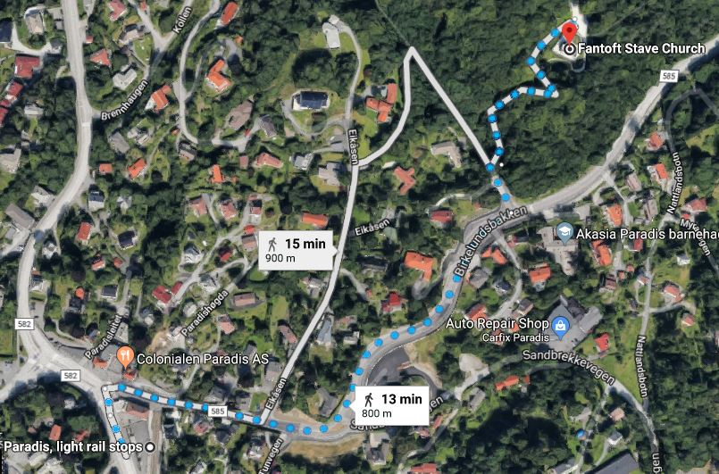

Full of History
The beautiful Fantoft stave church lies hidden within a small forest just south of Bergen. The church was originally built in Fortun in Sogn in 1150, but was relocated to Fantoft in 1883.
So come visit this magical place and discover over 800 years of church history, astonishing architecture, in breathtaking surroundings
What they say about the church
-
Ash M
Montreal, Canada
"Very small and beautiful. You will see ornaments coming from the viking times. Nice to walk around."
-
5StarDivaFamily
Long Island, New York
"Even for those tourists sick of seeing churches...this one is worth a visit. Cool wood architecture and style. Peaceful setting."
-
benroben789
Brussels, Belgium
"I have never seen christian churches decorated with dragon heads before. Only Norwegian tradition in Europe. Our guide gave us the whole explanation concerning it."
-
milbillin2018
West Chester, Pennsylvania
"Paid the price to go inside and was glad we did! All the wood carvings were amazing! Ask about all the dragons. Legend has it back in the day, dragons were good luck.The construction of no nails or screws makes it so unique!"
Information
How to get there
This place is as close as you get to paradise. Paradis, the Bergen light trail stop, is not to far away either. Just a 13 minute walk. Follow "Sandbrekkeveien" until you get to "Birkelundsbakken", and follow this road for a while.Then you take first left and then first right. There you are.
Fantoftvegen 38, 5072 Bergen, Norge
Opening Hours:
May 15 - September 15
open daily from: 10.30 - 18.00
Please note that the church only open seasonally on the date mentioned.
Entrance fee:
- Adults: NOK. 60
- Student: NOK. 45
- Children: NOK. 30
For group more than 20 people there will be 10% discounts, please contact us for bookings and reservations
Contact us
post@fantoftstavkirke.no
Fantoftveien 38
5072 Bergen
In the season: Tel: +47 552-807-10 Outside the season: Tel:+47 556-040-00